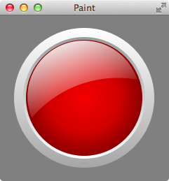
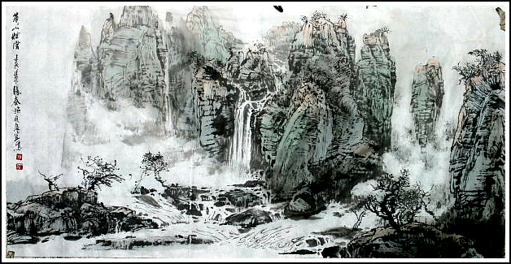
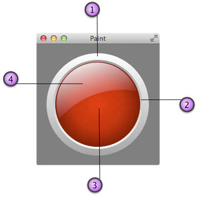

曾经遇到一个这样的需求：使用 代码 实现下面样式的按钮

观察按钮的样式，发现有多种渐变、有高光、有阴影、有不规则形状、有半透明效果，看到这么复杂的效果图，我的第一反应是用 Photoshop 做出效果图，使用 QSS 设置为按钮的背景图就可以了。但是，客户就是上帝，上帝说要用代码，那就用代码。有没有什么办法能直接绘制出这样的图形来呢？翻遍了 Qt 的帮助文档，没有，Qt 只提供了一些绘制简单图形的函数，如点、线、图片、填充、渐变、融合等，没有直接实现这种复杂需求的函数，那么，怎么用 QPainter 绘制出这样的图形呢？
放下代码暂且不提，先来看看这幅画在山水画家施贞泉先生笔下诞生的大致步骤，详细内容请移步 http://blog.sina.com.cn/s/blog_971cd89b010176vv.html

- 先用重墨画近景
- 然后是中景
- 在先画出山石的一个“面”之后，再下笔画相邻的“面”
- 画山石
- 用更淡的墨在两个山头的空间位置画出远山
- 穿插画些植被
- 用极干的淡墨擦出山下部的云岚
- 画流水
- 着色时一定要把水和云留白，再分别小心渲染
- 通观全局，细心收拾，做一些修修补补
分析上面的这些步骤，画家画画，不是从左到右或者从上到下 一次性 的把画的最终效果画出来，而是 分层次 一个部分一个部分的画出来，最后通观全局，细心收拾，做一些修修补补，如果看过周星驰的《唐伯虎点秋香》，想必对唐伯虎画《雄鹰展翅气吞天下图》的场景仍然历历在目吧，最后一幕唐伯虎使用 喷水滚印 往画上喷了一口水使得画活了起来，真是巧夺造化赛天工。
说了这么多，核心思想是没有哪一个好的效果是一次性画出来的，都是使用 分层绘制 的思想局部绘制，所有的层组合起来才能达到最终效果，Photoshop 也是这么做的，图层是 Photoshop 必须要掌握的核心技术之一，有些复杂的图甚至用了上百个图层。分层绘制还有一个好处，可以单独修改某个层而不影响其他层。
接下来就用分层的思想分析一下按钮可以分成哪些层吧，如图所示，可以分成 4 个层：

- 最外面的圈，使用线性渐变，上面比较亮，下面暗一些
- 小一号的圈，使用线性渐变，上面比较暗，下面亮一些
- 中心是一个圆，使用径向渐变
- 高光部分的外形看上去像一个半月，可以用一个小圆扣掉一个大圆的部分实现，像这种复杂效果，可以用 QPainterPath 来实现，而且还有渐变和一点点透明的效果
有了以上分析，用代码实现就有头绪了：
1 | void PaintButtonWidget::paintEvent(QPaintEvent *) { |
分层绘制的细想，和算法中的分治法是一个思想，把复杂问题分解为多个简单的小问题，解决所有的小问题后，将各小问题的解合并得到复杂问题的解决办法，以后遇到复杂的图形，想必对于大家来说，难度会大大降低了，分而治之，各个击破。